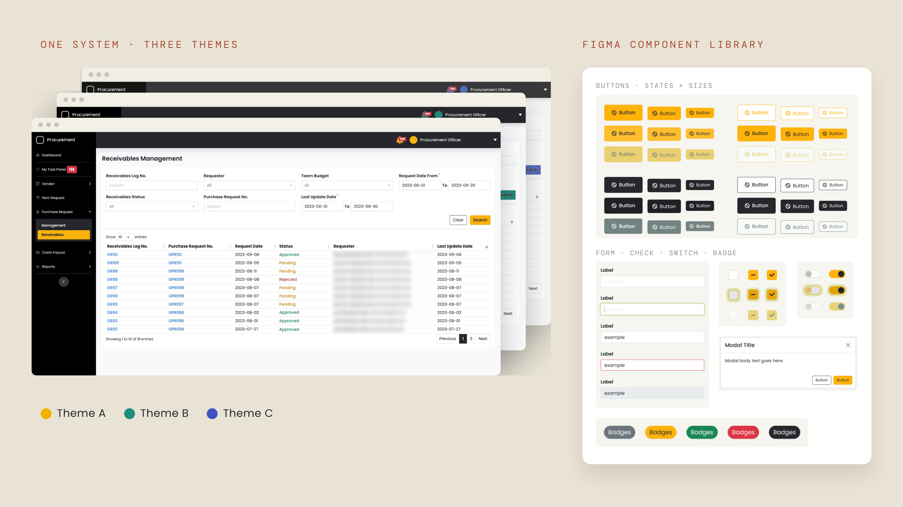

一套系統、三家公司：採購系統的 design system
原本只給一家公司使用的採購與報帳系統，後來擴增為集團三家公司共用。我負責介面設計，以 Bootstrap 建立可換膚的 design system，並在前端人力不足時接手開發，用 React 與 TypeScript 完成所有畫面與功能。

Background|
背景與問題
系統原本是為一家公司設計的。擴增為三家共用後，每家公司都要看到自己的 logo 與企業色；各公司的會計習慣不同，部分流程也需要客製化。
挑戰是讓同一套系統服務三家公司，而不是為每家各做一套畫面。
限制條件
以 Bootstrap 為基礎
主題與元件都要在 Bootstrap 的架構內完成。
前端人力不足
前端開發人手不夠，由我接手。
我原本不懂 .NET
系統使用 .NET，接手前端時我完全不會。
Key Decisions|
關鍵決策
版面共用，品牌元素可換
團隊討論後決定用 design system 處理換膚：整體畫面與版面三家共用，logo、企業色等品牌元素跟著公司切換。
善用框架，不重造輪子
只決定主色，100–900 的色階由 Bootstrap 自動延伸；我在程式端把主題變數設定好。
Figma 元件與程式碼一一對應
按鈕、表單、狀態標籤、Modal 等元件，含完整狀態與尺寸變體。前端也是我開發，設計稿與程式碼由同一人維護；元件庫也正式交付，留給公司與工程師使用。
不懂 .NET，也把前端做完
請後端工程師帶、自己查文件、先只碰前端，三種方式並用，最後以 React 與 TypeScript 完成所有畫面與功能。
Outcome|
成果
Reflection|
反思
自己寫過程式，設計時更懂實作成本
親手做過前端後，知道哪些設計做起來很貴、哪些用框架預設就好，畫圖時會先想實作方式。
下次會更常問工程師
如果重來一次，我會更常向工程師請教。
One system, three companies: a design system for procurement
A procurement and expense system built for one company later had to serve three companies in the same group. I designed the interface, built a themable design system on Bootstrap, and when front-end help ran short, took over development and built every screen and feature with React and TypeScript.
Background|
Background
The system was designed for one company. Once three companies shared it, each needed to see its own logo and brand colors, and because their accounting practices differed, some flows needed customizing.
The challenge: let one system serve three companies, instead of building a separate set of screens for each.
CONSTRAINTS
Built on Bootstrap
Themes and components had to work within Bootstrap.
Short on front-end help
There weren’t enough front-end developers, so I took it over.
I didn’t know .NET
The system ran on .NET, which I had never used.
Key Decisions|
Key decisions
Shared layout, swappable brand
After team discussion we chose a design system for theming: all three companies share the same screens and layout, while the logo, brand colors and other brand elements switch per company.
Use the framework, don’t reinvent it
I chose only the primary colors; Bootstrap generates the 100–900 scale. I set up the theme variables in code.
Figma components that map to code
Buttons, forms, status badges, modals and more, with full state and size variants. I also built the front end, so one person kept design and code in sync, and the library was formally handed over for the company and engineers.
Didn’t know .NET, shipped the front end anyway
Learning from back-end engineers, reading the docs and keeping to the front end first, I built every screen and feature with React and TypeScript.
Outcome|
Outcome
Reflection|
Reflection
Writing code taught me what design costs
Having built the front end myself, I know which designs are expensive to build and where framework defaults are enough, and I think about implementation while I draw.
Next time, ask engineers more
If I did it again, I would ask engineers for help more often.
Contact|
{{tc.h}}
{{tc.sub}}